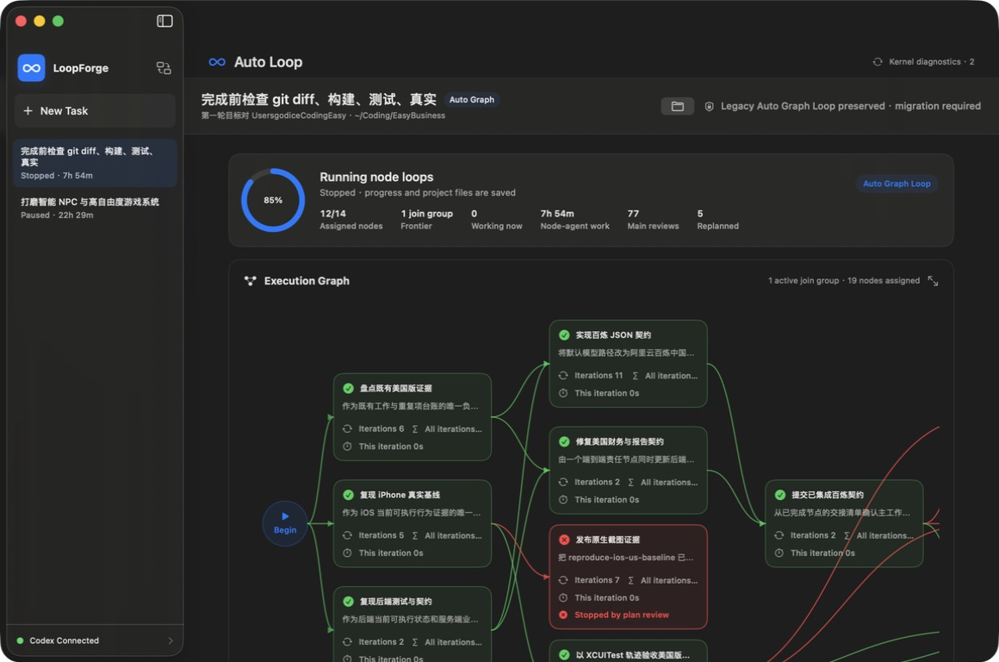
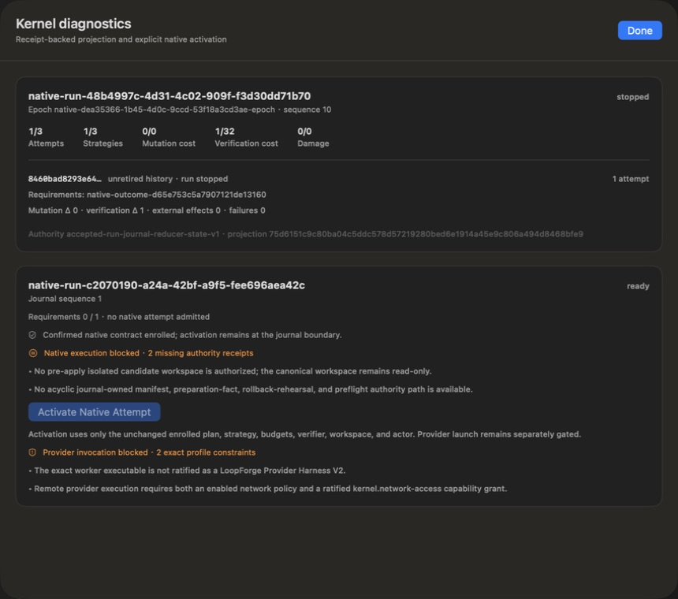

LoopForge forensic redesign
Evidence-backed reconstruction of the non-convergent EasyBusiness run, followed by a side-by-side orchestration kernel redesign. EasyBusiness is preserved as read-only evidence.
Systemic cause, not a bad prompt
- Mutable controller snapshots acted as authority; no replayable command/event reducer existed.
- Worker prose and self-review could become completion truth without requirement-bound receipts.
- Retries tracked turns and labels, not causal failure, strategy identity, novelty, or expected value.
- Visual tests rewarded geometric non-overlap while no immutable Chinese/product baseline could veto typography, shape, density, or hierarchy regressions.
- Graph, Single Loop, and Watcher independently owned lifecycle, timing, cancellation, persistence, and completion semantics.
- Mutable integration, push, resource cleanup, and report promotion were not one receipt-backed transaction.
Measured failure
The run continued through repeated blocked/replanned cycles, admitted rejected visual frames into later review, displayed aggregate success despite visual failure, and could not distinguish cumulative accepted work from the current iteration.
Implemented side-by-side
Latest interactive packaged native UI evidence
The screenshots below belong exactly to the latest interactively inspected package built at 2026-08-16T06:19:54Z, bound to snapshot 0e42de36…21da7 and its package-owned 864-test, 8-skip, 0-failure log. Deep strict signing, ZIP/DMG/checksum validation, mounted-DMG identity for all three Mach-O files, direct and mounted exact startup, cleanup, source/test-manifest binding, unlocked inspection, and real UI quit passed. The newer source-only runtime-policy package has no visible UI change; these screenshots are not relabeled as its evidence.
{kind=link}

443373ad…bb8d.{kind=link}

unretired history · run stopped. The immutable journal needs no migration or quarantine. Screenshot SHA-256 37f8a69e…f50a.- Current source snapshot
348535de…11d3bpassed its package-owned 867-test run with 8 intentional environment skips and zero failures in 87.345 test seconds. All three Release products, deep signing, ZIP integrity, DMG verification, all-three-Mach-O mounted-DMG identity, SHA-256 manifest, exact source/test binding, direct and mounted startup, detach, and cleanup passed. The exact packaged executable isf09bcf83…f5fdfwith CDHash0ba16766…dc39 - A full-application-crash proof launched a real productive provider and observed its PID live. A new AppModel received only durable recovery evidence, reconstructed no productive session, reattached the exact PID/start identity through cleanup-only authority, terminated it, journaled release under the distinct
native-crash-recovery-*namespace, interrupted the attempt, and reached stopped quiescence. Exact empty and missing-drain crash windows also auto-interrupt; stale or ambiguous ownership advances no journal and remains a visible blocker - The shared supervisor now rejects incompatible release semantics before admission: borrowed resources detach, owned process trees gracefully terminate, and other owned resources join through an exact typed owner. Queue insertion and recovery snapshots use the same rule. The workspace-mutation authority now retains its exact non-Codable live join handle, rechecks the complete preflight plan before dispatch, completes only the already-authorized envelope, proves exact durable release plus
appliedUnverified, and synchronizes quit with startup recovery - A dedicated application-level test launched a ratified productive V2 provider, proved its PID live, and invoked the real AppModel quit boundary without provider completion. Exact group termination and managed-process release were journaled, the active attempt became interrupted, live leases cleared, and the run reached stopped quiescence; the proof passed again inside the package-owned suite in 1.108 seconds
- A companion application-level test completed a real provider, captured its candidate, launched the exact postimage verifier, proved the verifier PID live, and invoked the same AppModel quit boundary. Cleanup journaled managed termination plus
runtimeCleanupTermination, minted no natural exit, result authority, or verification batch, retained a failure digest, and reached stopped quiescence; the proof passed again inside the package-owned suite in 1.306 seconds - The production session now owns a typed postimage-verifier launch boundary. Missing resident-memory enforcement journals and exactly replays one pre-admission veto; malformed or cross-wired authority rejects before leases or processes. The same production API accepted an exact test-only enforcement capability, launched a real verifier, and the real application-quit path released it fail-red. Release still has no trusted resident-memory containment issuer, so it remains safely vetoed
- The production execution coordinator now owns the final mutation-preparation boundary. Missing Release containment journals and replays an exact contract/transaction/preflight/recipe-set veto while integration remains
rollbackPrepared; no workspace lease, apply intent, outbox entry, or canonical write exists. Collision, substitution, cross-wire, and inner-request capability smuggling reject. A genuinely changed exact test authority can proceed only through the same production resolver and exact journal revalidation - Native authoring exposes one explicit worker-network control off by default. An enabled profile requires exactly
kernel.network-access; dormant and unknown grants reject. The exact user source, constraint, authority ceiling, causal strategy, plan node, authoring nonce, candidate revision, user identity/lineage, and whole-ceiling digest are bound into a non-Codable grant receipt and candidate identity. Model JSON still cannot grant capability authority - Provider launch receipt schema 2 binds the runtime and external-process identity to exactly one process and a 16 MiB per-file output ceiling. Caller-supplied, missing, or broadened limits reject. The sandboxed V2 fixture consumes all three fixed-descriptor inputs, attempts to spawn a child, and completes only when the native process-count ceiling denies that fan-out
- Provider invocation readiness is now derived as a typed, separately projected contract property. The exact package names the missing LoopForge V2 harness protocol and absent
kernel.network-accessgrant, while leaving journal activation governed by its own mutation/readiness constraints; no provider prompt or process is created merely to diagnose either gap - Unsupported provider environment authority now rejects at readiness, direct authorization, decoded-receipt replay, and lower runtime preparation. The lower preflight occurs before immutable prompt issuance, and an adversarial filesystem assertion proves a rejected
declaredAllowlistpolicy creates zero prompt artifacts - Receipt-proven pause/stop quiescence now interrupts an unfinished active attempt only after exact retained-drain, run, resource/failure-set, monotonic-order, phase, and intent validation; an unbound replay event cannot change state. Normal app quit preflights every retained session before mutating any process session, then executes only unchanged exact cleanup plans. Bound owned process trees recover by PID/start identity, terminate as groups, and receive durable release receipts before stopped quiescence. Exact workspace-mutation joins are retained through the same composition; unbound, failed, queued, in-doubt, mismatched, quarantined, or still-pending ownership cancels quit
- Startup reconstructs the newest unchanged ready enrollment only from exact durable registry and original
runCreatedproof. Separately, exactexecutingorstopRequestedjournals can recover a cleanup-only actor with no execution proof, candidate root, provider, mutation, review, retry, or completion authority. An identity mismatch is retained as a quit blocker rather than forgotten. Missing live protected-design authority remains a typed readiness blocker - The exact package exposed only Read Only for the independent reviewer and all three modes for the worker, confirmed a worker Read Only contract with no writable paths, enrolled run
native-run-48b4997c-4d31-4c02-909f-f3d30dd71b70ready at sequence 1, and activated it to sequence 6 executing with mutation delta zero. Relaunch retained executing state without reconstructing ready activation authority; no provider, verifier, worker, mutation, or legacy execution launched - Every decoded historical mode now routes from production start, startup recovery, resume, and candidate selection into one idempotent migration-required blocker with no timer, agent, process, mutation, integration, selection, or retry authority. New authoring exposes only Journaled Auto Graph; historical evidence has no Resume or Keep This Result control. The legacy lifecycle is DEBUG-only and the exact packaged Release executable contains no characterization-hook symbol or string
- Non-DEBUG native confirmation requires a real manifest selection and rejects substitution before ratification. Enrollment revalidates the immutable selection again, requires exact equality with the contract's executable recipes, and imports confirmed bytes into the private journal run directory before
runCreated. Activation accepts no executable path and resolves and rehashes only the journal-owned digest artifact; missing or tampered artifacts veto without importing anything - The app now packages and independently selects a separately signed LoopForge Provider Harness V2 transport spine. It validates canonical FD 196 context, exact stdin prompt bytes/digest/EOF, optional length-prefixed FD 197 credential with zeroization, fixed ordered flags, and canonical terminal JSONL. Its exact manifest declares
transportVetoOnlywith no productive backend, so valid invocation can propose onlyblockedand readiness reportsproviderHarnessProductiveBackendUnavailable. Direct Codex/local/API executables remain typedunavailable - Readiness, direct invocation authorization, and decoded-receipt replay now each independently require
providerHarnessMode == productive. A transport-veto profile throwsproviderHarnessProductiveBackendUnavailablebefore prompt authority crosses the provider boundary and cannot recover launch evidence through a relabeled receipt - Native Auto Graph authoring now creates only a user-confirmed, journal-enrolled ready run; historical Auto Graph execution is retired, and the new composition layer keeps plan/baseline/convergence/node/attempt preparation inert until an unchanged journal activation issues a non-serializable proof consumed by the process runtime
- Managed worker I/O is now shell-free and confined to the exact private journal run directory through no-follow directory-relative file descriptors, exclusive 0600 outputs, and overwrite/traversal/symlink rejection; natural process-group exit is journaled before lease release and closes only the exact bound occurrence
- The native contract now displays and canonical-source-binds worker/reviewer provider, stable provider reference, model, reasoning, sandbox, network, plugin, and environment policies;
runCreatedjournals the profile, production enrollment rejects missing profiles, reviewers are ratified read-only/offline/minimally isolated with distinct lineage required, and ungranted Full Access fails before journal creation - The exact authorized executable is staged before admission into an owner-private journal directory under its SHA-256, using an independently rehashed APFS clone-on-write inode or a bounded streaming fallback; symlinked directories, wrong existing artifacts, source mutation, unsafe modes, and oversize files fail closed, while launch receipts bind digest, byte count, device, inode, and materialization
- The journal runtime now rejects caller and ambient environments, generates exactly
LANG,LC_ALL,NO_COLOR, and fixedPATH, journals a value-free canonical digest receipt, persists that digest explicitly in process identity, and rechecks it before spawn; a raw-Darwin child observed exactly the four variables, while declared variables remain fail-closed without typed grants - The journal runtime now exclusively creates provider prompts beneath its run directory with descriptor-relative exclusive I/O, binds device/inode/digest/size, and rehashes the exact open stdin descriptor before spawn. Deterministic provider argv accepts no caller fragments and disables plugins and hidden fan-out. Remote credentials cross only a single-use expiring fixed-FD pipe through the signed sandbox gate after target exec, with no secret bytes, size, hash, environment, argv, disk, or recovery representation. After real spawn and attestation, a non-serializable runtime-issued capability atomically journals binding plus a credential-free provider-launch event; typed recovery and strict parsing reject invocation, nonce, process, or secret-evidence substitution. Generic runtime and adapter launch APIs are absent from release builds; a real provider fixture launch, recovery, join, release, and exact output passed
- A separate production execution coordinator now carries an exact ratified enrollment through reducer-preflighted plan/admission, activation, supervisor restoration, and a private journaled provider session without referencing
LoopController,CodexRunner,GraphLoopEngine, legacy task snapshots, or mutable timing. Preparation must exactly equal the retained strategy, plan, prediction/falsifier set, rollback revision, and convergence budget; substitution rejects before any journal append. The session constructs its productive lease and derives result digest, nonce, and disposition from accepted receipts. Native start and reviewer-to-completion composition remain intentionally unavailable - Ratification recomputes the sealed compiler candidate digest, rejects post-compile mutation, validates exact per-requirement evidence-recipe coverage, and retains the content-complete source revision plus finite mutation/convergence ceilings. Native confirmation also displays and explicit-user-binds a typed causal strategy, recipe-bound expected observations, mechanical
requiredEvidenceMissingfalsifiers, and a requirement-owned plan with exact dependencies, scopes, capabilities, file/byte ceilings, and mutation-surface identity. Readiness now distinguishes exact read-only execution from mutation: a read-only contract can report zero blockers, while typed writable paths, nonzero file/byte budgets, or a write ceiling retain explicit pre-apply candidate-isolation and journaled preparation blockers. Production composition rejects mutation before preparation, and activation repeats the veto beforestartAttempt; no start control is offered - The manifest audit proved the existing desired-postimage byte authority is post-apply, while integration apply requires preflight. It therefore cannot be reused as the source of preflight without circular authority. Native worker activation also still binds
workspaceOnlyto the canonical workspace. Mutation-capable execution is now mechanically vetoed at readiness and both activation boundaries until a journal-owned pre-apply isolated candidate workspace and acyclic delta/content/manifest/preparation/rollback/proposal/preflight chain exist - A production-enrollment-bound pre-apply isolator now creates one owner-private writable candidate beneath an exact execution sibling of the journal tree from the complete ratified source revision. It uses descriptor-relative no-follow stable reads, bounded hashing, exclusive writes, atomic install, independent descriptor-tree verification, a self-digested receipt, and a non-Codable held root descriptor. Source drift, candidate tamper, decoded receipt tamper, closed authority, and pathname replacement fail closed. Issuance is intentionally inert: it appends no journal frame, advances no reducer state, clears neither mutation blocker, starts no process, and cannot impersonate post-apply or activation authority
- The live pre-apply capability enters a dedicated pure-reducer/hash-journal acceptance boundary and is then consumed exactly once by production activation. Before first append, duplicate resolution, activation, and native spawn, LoopForge revalidates the held no-follow root descriptor, exact writable tree, path identity, run-private execution location, source manifest, counts, actor, and receipt. The session retains an independent descriptor; execution proof and provider invocation bind the same receipt; Darwin descriptor-relative spawn fchdir selects the candidate; and the stopped workspace-only sandbox gate must attest its exact device/inode before resume. Substituted or stale authority rejects before start, while candidate write authority remains disjoint from journal evidence
- A bounded workspace source-revision collector hashes the canonical workspace/root/policy identity plus every sorted included regular-file path, permission mode, exact byte length, and content SHA-256 through descriptor-relative no-follow opens. Git state, timestamps, inode values, enumeration order, and model prose are not revision authority. Symlinks—including names covered by an excluded-directory policy—special files, traversal, concurrent change, and file/byte-budget overflow fail closed. Native authoring retains the exact policy and limits, re-captures the workspace at confirmation, rejects post-display source change, and binds the confirmed strategy and plan to that exact revision without inferring authority from the observation
- Native Auto Graph authoring now exposes the source-revision directory exclusions as explicit user-visible typed authority. The parser accepts only comma/newline-separated directory names, canonicalizes ordering, and rejects duplicates, paths, traversal, or invalid names before capture. The complete policy and limits remain digest-bound to the source revision and confirmation-time recapture; an explicit generated
disttree with an internal symlink is excluded as authorized, while a symlink occupying an excluded name or any non-excluded symlink still fails closed - Native Auto Graph authoring imports one exact schema-constrained postimage-verifier manifest. No-follow stable-file reads hash the executable while code fixes transport, the sole candidate input, environment, capture, parser, disabled network, zero children, reject-unmatched behavior, and maximum resource ceilings. Confirmation paths are enrollment-import hints only: enrollment owns the content-addressed artifact and activation has no path input
- Verification and independent-review reducer commands no longer accept caller-constructed Codable receipts in Release. Verification consumes only the first live post-release result capability and derives every v2 receipt field. A separately activated adversarial reviewer receives the descriptor-bound candidate plus the exact journal-resolved accepted/effective v2 evidence-set digest, must differ from both worker and original verifier, and produces a second live result that cannot mint verification. The journal runtime alone derives the review receipt and requires exact transaction readback. Integration verification then consumes the original verifier capability and exact durable v2 fact; independent integration acceptance separately consumes the original reviewer capability and exact durable review
- The executable-verifier chain now binds an exact candidate postimage, descriptor-atomic candidate handoff, staged executable, canonical parser, deterministic native-exit/parser-result mapping, bounded read-only/offline runtime, retained-byte hashes, atomic schema-v4 result containment, derived ordinary v2 verification, separately activated independent review, and exact integration reliance. After admission, the complete sealed tree is enumerated and hashed through one held no-follow root descriptor; ordered spawn fchdir binds verifier input
.to that object, CLOEXEC-default removes the descriptor, and stopped-process vnode attestation plus replay bind exact materialization device/inode and mechanism. Journal-first activation is crash-continuable before launch, latest red revokes matching green, and publication remains hard-false. Resident-memory enforcement is not falsely claimed: rejected ordinary-macOS primitives leave Release without an issuer and verifier/reviewer launch vetoed before lease admission. Native design-baseline confirmation, complete visual-evaluation authority, and final-completion authority are present; controller invocation, publication, and native start remain absent - Immutable-baseline and visual-evaluation commands require non-serializable authority in Release. Native authoring now selects a strict capture-source manifest, rehashes protected artifacts and bounded evidence through descriptor-bound no-follow reads, obtains one-shot native adapter receipts, binds a preservation-required baseline into the ratified contract, enrolls with zero workers, and displays a second exact confirmation. The explicit freeze action issues one single-use live capability that Release preparation accepts. Candidate capture, deterministic measurement, distinct independent-review authority, and the journal-bound kernel-evaluation issuer are present; production-controller invocation remains pending
- Candidate visual measurement requires live non-Codable capture authority from the native adapter. A separate allow-listed deterministic measurement adapter binds the exact baseline/candidate pair, traits, capture and measurement protocols, protected dimensions, accepted debt, raw JSON evidence, and adapter-owned time; it rejects harness-selected receipts, incomplete debt/dimensions, nonfinite values, and stale or mismatched captures before minting its own live evidence
- The native independent visual-review adapter requires every contracted live capture and applicable measurement, revalidates baseline and candidate pixels against their original receipts, enforces exact known-debt severity coverage, and activates only a distinct ratified read-only/offline/plugin-free reviewer with an exactly allow-listed provider/model/executable identity. The new production compositor resolves the exact run, completed attempt/start frame, frozen baseline, worker/reviewer profiles, four distinct lineages, candidate matrix, attestations, and evidence times; derives the command and receipt IDs; appends and re-reads one reducer-owned visual evaluation; resolves exact retry idempotently; rejects cross-wiring without a journal effect; and preserves reviewer veto as durable red evidence. Production controller invocation remains pending
- All integration transitions now require non-serializable command authority. The completed-candidate preflight runtime can mint only the exact proposal and admitted preflight from the live journal-accepted rehearsal; the journaled workspace runtime can mint only apply/rollback transitions after exact live-lease validation and bounded executor results; and the journaled process runtime can mint only postimage verification and independent acceptance from the two original live result capabilities and exact journal facts. Every integration phase still denies publication. The deterministic final-completion coordinator now issues the only production completion capability against one exact hash-journal head and reducer-recomputed evidence digest; mandatory requirement, duration, runtime quiescence, external-dependency, latest native visual, integration, and actor-lineage vetoes cannot be averaged away. Production-controller invocation remains pending
- Mutation preflight no longer accepts a decoded manifest plus caller-supplied accepted-ID sets as Release authority. The production issuer consumes the exact live journal-accepted rollback rehearsal, revalidates canonical affected paths and external objects, recaptures the complete worktree under the ratified policy, projects protected-baseline bindings, and journals the ordinary proposal plus rollbackPrepared preflight. A second boundary journals a workspace-wide exclusive lease and exact apply intent before persisting the complete request. The real startup recovery composition now dispatches that request in a synthetic registered workspace, applies the candidate bytes, recomputes the manifest-selected content-complete source revision, journals the exact apply receipt and candidate-postimage attestation with runtime-owned completion time, releases the lease, completes the outbox, and restarts with zero executor reentry. That same chain now materializes and activates the exact contract verifier, closes/reopens the journal, rematerializes the same sealed tree, and recovers the original activation capability; the missing resident-memory issuer then vetoes launch before a lease or verdict. Recovery keeps
appliedUnverifiedvisibly attention-required; verification, independent acceptance, and publication remain absent - The retained resident-memory defect is now closed at both lifecycle boundaries without inventing containment. Future apply requires exact non-Codable readiness for every ratified verifier/reviewer recipe before supervisor construction, lease admission, apply intent, or outbox persistence. Ordinary-macOS Release has no issuer, so the transaction stays
rollbackPreparedwith no effect. Historical already-applied journals replay the typed launch veto, exact completed apply envelope, and a fresh exclusive rollback lease to restore only the retained preimage, reachrolledBack, release authority, and restart with zero executor reentry. Identity mismatch or workspace drift quarantines instead of guessing - The five non-journal preparation classes no longer use bags of accepted IDs: write authority, mutation ceiling, rollback rehearsal, candidate-scoped quiescence, and per-operation path resolution now share an exact transaction/candidate/contract/plan/preimage/postimage binding. The worker protocol retains no authoritative operations or canonical preimage, so these durable schemas still cannot mint Release authority until a trusted capture runtime journals and replays them
- The exact verified mutation-delta byte set can now be retained in an owner-private external content-addressed artifact: absolute descriptor-relative no-follow traversal, exclusive object creation and atomic install, read-only sealing, sync, exact enumeration, stable metadata, and independent rehash protect first materialization and reuse. Changed inputs, altered or extra artifact bytes, workspace overlap, permissive roots, and symlinked store/artifact entries fail closed. This store remains inert and proves neither trusted byte origin nor journal acceptance
- HEAD, index, and all Git-untracked preimage planes now come from one production-enrollment-bound, read-only, repeated Git observation. A second stable observer binds the accepted commit/Git identities, object format, HEAD and shallow state, Git-resolved no-follow info/exclude bytes, all ratified worktree
.gitignoreentries, and an effective ignored/not-ignored classification for every untracked path. Global/system config is disabled; sparse checkout and external excludes reject. It composes those facts and the confirmed worktree artifact into one exact canonicalWorkspacePreimage. Both hash-journal events retain only inert receipts; replay performs no Git or filesystem I/O, exact duplicates return retained evidence, and substitution or decoded tampering fails without advance. Manifest and proposal/preflight issuance remain absent - Separate non-Codable issuers prove both mutation byte origins. Baseline expected-preimage bytes require exact production registration/enrollment, reducer-owned contract replay, and complete baseline recapture around descriptor-stable no-follow reads. Candidate desired-postimage bytes require the held read-only descriptor-atomic materialization of the newest exact accepted apply. Both enter receipt-only hash-journal events. A journal-aware composition issuer resolves both exact accepted receipts, cross-binds candidate receipt and attestation, requires exact expected/desired derivation partitions, deduplicates only identical shared objects, rehashes the complete union, and rechecks candidate freshness before and after verification. A journal-first store coordinator now installs only that live non-Codable composition, re-resolves both origin receipts and candidate freshness before and after filesystem work, revalidates the sealed external artifact immediately before first append, and journals one inert exact receipt per derivation. Pure reducer/replay logic performs no filesystem I/O; exact duplicates return retained evidence, substitutions reject without journal advance, and a newer failed rollback stales new acceptance. No store receipt issues preflight or effect authority
- Occurrence, external-dependency observation, runtime-drain, and quiescence commands no longer accept directly constructed Codable receipts in Release. The clock-owning occurrence recorder issues closed occurrences. A separate production lifecycle authority journals pause/complete/stop before entering supervisor drain, samples all clocks and live/failure/cleanup sets itself, leaves productive admission closed if the drain-event write fails, rejects duplicate journal receipts instead of mistaking ID idempotency for a new payload, and journals quiescence only from an empty draining supervisor; callers cannot provide those facts or the verdict. External-dependency activation stages exact observer bytes and a journal-bound immutable nonce request but deliberately starts no process. A new atomic two-event journal boundary binds one exact activation frame to its accepted native process identity, productive owned process-tree lease, staged executable, request, argv/environment, private I/O, sandbox attestation, and resident-memory ceiling; live authority remains non-Codable and replay retains only inert facts. If a trusted native runtime later produces that exact launch and release-bound result, the journal-owned observation coordinator alone derives and appends the provenance-bound observation. Durable event replay remains fail closed
- Runtime admission, external process binding, release, and cleanup-failure commands likewise require non-serializable authority. Production factories require an issuer token constructible only inside the journaled process runtime or journaled workspace-mutation lease authority, and binding accepts only the process token. Journal-first crash cleanup, stale-writer ownership retention, absent-process reconciliation, and mutation release-failure evidence remain intact
- After exact journaled natural exit, retained stdout/stderr are read through bounded no-follow descriptor-relative files and hashed exactly; only canonical known-key JSONL with continuous sequence, one thread, exact invocation and nonce, and one final terminal envelope can create a journaled proposal receipt, while prose, truncation, cross-wired releases, and terminal ambiguity fail closed without changing attempt disposition
- Every journal-owned worker now enters a deny-default native Seatbelt profile through a signed self-stopping gate; before binding, the parent requires
sandbox_check == 1, exact launcher/gate/profile/parameter digests, stable process-group identity, and successful close-on-exec target replacement. Read-only and exact workspace-only policies protect journal evidence; unsafe Full Access fails before admission, staging, or spawn - Spawn-failure cleanup uses
unlinkaton the still-open original directory descriptor, so directory replacement and traversal cannot redirect deletion; reducer-owned execution derivation requires exact journaled exit plus retained-output/parser receipts and recovery rejects a disposition/evidence-tampered derived event - Production recovery and enrollment now share one private registry; only a compiler-sealed, user-ratified contract with no blocking ambiguity can be journaled and then registered through a file-private proof that persists exact confirmation and journal-frame provenance
- A duration interval now opens only from an exact new productive owned process admission and PID/process-group binding, and closes only from the same native handle's exit plus the exact journaled lease release; cross-wired transactions and forged handles fail closed, outcome comes from native exit, and release latency is excluded from time
- A non-Codable single-use runtime capability now owns occurrence boot, monotonic, and wall clocks; disposition and reboot/reset/sleep exclusions are derived rather than controller-supplied, and crash-lost open intervals count zero
- Closed occurrences are hash-journal events; all causal-progress transactions and the accepted subset are separate reducer projections, so arbitrary processed commands, invented evidence, and recursive occurrence evidence cannot enter provenance; both completion stages reject
durationIncompleteuntil replay-derived accepted duration reaches the contract - Equivalent kernel strategies now share one replay-stable budget across renamed observation IDs, falsification IDs, lesson receipts, attempts, nodes, threads, and models; only requirement ownership or one of nine causal axes contributes to the fingerprint
- Every superseded node and every durable
supersededAtrecord is now an anti-repeat tombstone even when a legacy checkpoint lacks its optional lesson or restored terminal status; new incremental and redundant repair retirements persist a default lesson and renamed same-topology final repairs fail closed - The third consecutive blocked turn now creates durable strategy-escalation state, detaches the rejected thread, and forces abandon/reframe/split/replace review; legacy warning-only checkpoints and later plan adjustments cannot revive the same exhausted node
- Redundant final-repair cleanup retains superseded tombstones and never refunds round or cumulative node capacity; encoded/relaunched state stays exhausted
- Fresh IDs and paraphrased objectives or verification prose can no longer revive a retired Graph strategy; only a normalized read/write-topology change can authorize one bounded legacy replacement, while malformed scope data fails closed
- Ordinary and parallel isolated results are checked as a complete NUL-delimited tracked/untracked delta before Main Graph model review; violations are quarantined without canonical integration or automatic retry
- Final audit cannot create a writer from missing scope or broaden a repair to
.; direct and dependency-recovery proposals retain only exact scopes contained by already materialized graph authority - Executable exit-7 fixture rejected; successful live-fixture and packaged-process cleanup passed
- Noisy, fenced, multiple-object, and trailing-text Graph decisions rejected; immediate Watcher recursion retired
- Typed exact-implementation receipts reject forbidden substitutions without provider or brand matching
- Watcher repairs and assessments require a fresh read-only lineage over exact artifact digests; legacy self-authored conclusions remain advisory
- Watcher completion requires fresh completed/ok telemetry, successful issue-free runtime, checkpoint and verification digests, complete goal-anchor evidence, and an independently bound completion receipt; legacy or tampered completion fails closed
- Heavy deterministic evidence uses canonical content/collector/parameter digests, coalesces identical misses, rejects tampered persistence, bounds retention, and retains report media once under full SHA-256 identities
- Repository evidence now scans once per observation; only canonical-root/workspace/tree-generation/journal-frame receipts allow cross-observation hits, while legacy receipt-free calls are visibly uncached
- WorkspaceAuditor's duplicate tree walker is retired; updated Loop, Graph, and report-review paths share one observation across audit, prompt, and evidence, and a failed observation is never retried into a different byte boundary
- Only RunJournal can issue an opaque cross-observation generation from an exact accepted apply/restored rollback event; later ambiguity revokes older authority, and startup recovery exposes or withholds cache telemetry before work admission
- Task contracts retain exact UTF-8 user bytes and source spans; stale, model-authored, ambiguity-downgraded, or unconfirmed candidates cannot gain mutation eligibility
- Exact deliverable counts are opaque contract data, require explicit user-bound source authority, and accept only one evidence-digested stable member identity per required set member; nine, eleven, substitute, and duplicate-identity fixtures fail for a declared ten
- External dependencies are opaque contract data with exact requirement, observer lineage, and one mandatory executable probe: direct transport, exact executable/parser digests, bounded shell-free argv with one private request token, minimal environment, explicit network policy, complete available/unavailable mappings, and zero-child resource ceilings. The strict parser accepts only one canonical newline-terminated six-key JSON result bound to fresh nonce, dependency, recipe, result identity, and evidence SHA-256; parsed bytes remain inert until a journal-owned runtime composes native exit and issues the observation
- Capability words in objective prose and fake model JSON grant nothing; each opaque capability requires an exact non-Codable out-of-band user receipt bound to the complete authority ceiling. The native composer now issues that receipt only for explicitly selected
kernel.network-access, while unknown and dormant grants fail closed - Registered new-kernel runs expose budget, strategy fingerprint, failure, lesson, mutation/evidence delta, replacement axes, source sequence, and projection digest through a read-only native sheet populated only by hash-journal reducer replay
- The exact latest interactive package opened through Computer Use while unlocked, retained hash-bound 1160×768 main-window and 860×760 Kernel-diagnostics screenshots, left the historical EasyBusiness task stopped and untouched, and exited through a real UI quit with zero packaged processes or verification mounts. Source and reducer audit proved the stopped projection has no active execution attempt; the raw
activeword meant only that a strategy was never retired. Terminal diagnostics now label itunretired history · run stoppedwithout rewriting the consistent immutable journal. The newer source-only policy package has no visible change and these screenshots were not relabeled. The complete trait/window/baseline/candidate matrix remains pending - 39 supervisor admission, policy compatibility, queue, recovery, and cleanup-plan tests
- 5 runtime/journal integration tests
- 9 native process-group fault-injection and recovery tests
- 12 journal/native admission, race, compensation, and reconciliation tests
- 15 interval tests
- 16 journal/import, duration, and causal crash-replay tests
- 14 causal convergence and strategy retirement tests
- 35 immutable visual-baseline and adversarial review tests
- 14 visual journal authority and crash-replay tests
- 9 native capture attestation and adversarial evidence tests
- 11 legacy Graph/kernel shadow authority, node parity, and retained-replay tests
- 9 explicit shadow-contract mapping, authority, topology, and canonical-encoding tests
- 18 transactional preflight, exact-preparation-binding, capability, CAS, rollback, path, authority, and budget tests
- 8 journaled integration-state, lineage-separation, rollback, quarantine, and replay tests
- 14 real-filesystem executor and durable effect-outbox tests
- 1 end-to-end production startup-dispatch, attestation, cleanup, and no-reentry test
- 1 trusted workspace lease admission, forgery, exclusivity, and release integration test
- 5 durable recovery-registry/coordinator security, telemetry, empty-startup, and fail-closed tests
- 1 native-controller startup veto before Codex or legacy Graph work
- 5 journal-bound repository-generation, invalidation, root-mismatch, provenance, and symlink tests
- 18 audit/evidence, 84 Graph, and 5 Loop lifecycle shared-observation regressions
- 0 live LoopForge leases after quit
Independent red → red → green visual closure
The candidate snapshot was compared with exact baseline commit 6e9b99d in four real native cells: standard/accessibility and expanded/narrow. The first independent confidence-0.97 review vetoed redundant chrome, task-title demotion, density, accessibility reflow, and clipping. After a bounded hierarchy and whole-column correction, the second confidence-0.97 review retained only H-04 because three cells bisected lower cards. The whole-row, top-aligned correction added explicit Next levels and More nodes below boundaries. A third independent review passed H-04, H-05, H-06, H-07, and H-09 at confidence 0.94 with no required changes. Both red receipts remain preserved. Snapshot 3870639d…845 is now bound to clean implementation commit 65d050f; its package-owned suite passed 874/8/0, the embedded manifest records sourceDirty: false, and Release packaging, strict signing, hashes, native capture, display restoration, and process cleanup passed.
The exact clean package was relaunched through Computer Use. The stopped legacy task, primary task hierarchy, Running node loops summary, graph cards, and explicit continuation labels remained visible; Cmd-Q left zero packaged processes.
{kind=link}
Remaining mandatory work
All legacy controller execution ingress is retired, and the implementation commit, clean-source package, 874/8/0 suite, signatures, hashes, native matrix, clean-package confirmation, and first remote integration are complete. The gate-specific receipts nevertheless still mark native production-controller cutover and full unlocked runtime walkthroughs as pending: Journaled Auto Graph authoring/planning/execution must invoke the retained journaled production session, visual and final-completion authorities must flow through that controller, and Watcher plus repository-generation telemetry require current native proof. The ordinary-macOS physical-footprint issuer and ordinary-app productive-provider install/cutover strategies remain disproven and retired; mutation-backed verifier/reviewer/observer execution requires separately scoped privileged or virtualized isolation. These are substantive release gates, not paperwork, so final acceptance remains zero under the all-or-nothing metric.